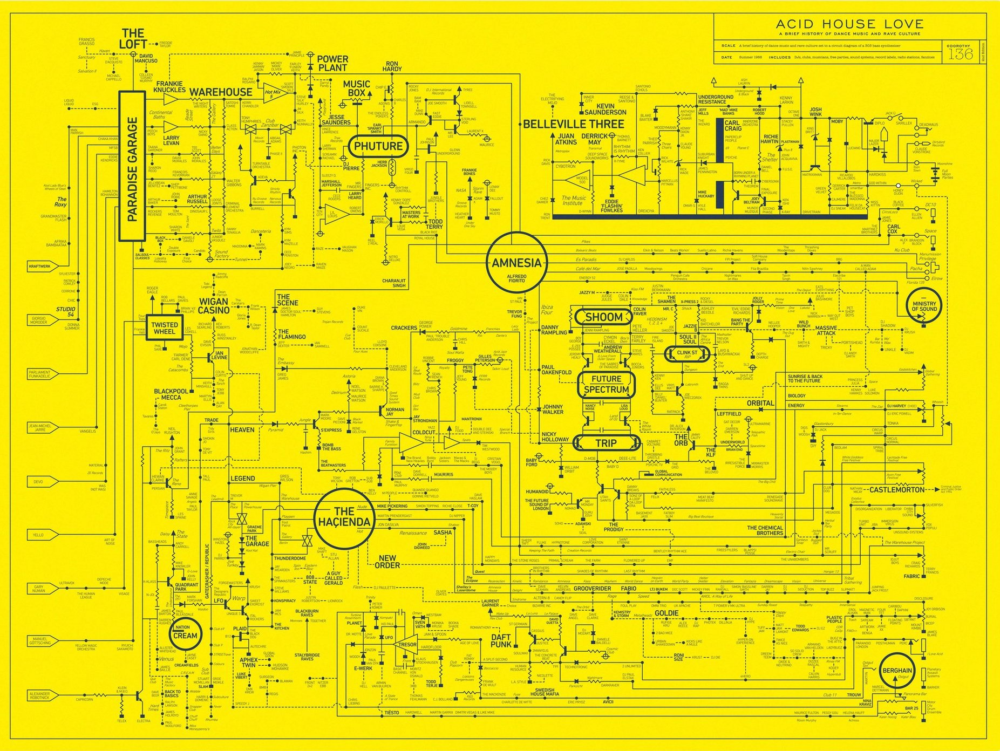
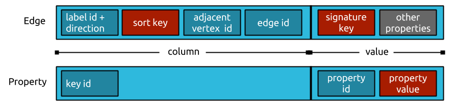

Howdy
Who I am
- Make my coin as a software engineer
- My background is in the arts and music industry
- Currently in Kingston, NY
Who I am
- Oberlin: BMus in composition
- Forced Exposure: music distribution
- Harvard: masters / PhD in composition
- Music21 @ MIT: toolkit for digital musicology
- Discogs: music database / marketplace
- CapitalOne: banking core modernization
A cute dog

Musical maps
State of play
- A variety of musical maps exist today
- Some are interactive, some aren’t
- Most are concerned with concepts of “genre”, “style”, “period” and how these categories mutate into other categories, and generate new categories
- But, they almost all represent music history as a graph
“”

“”
“”

“”

Lossy abstractions
- Abstract categorizations are highly subjective
- They elide really interesting information:
- Who collaborated with who?
- Who curated or published who, and when?
- How do multiple labels’ curation overlap to create the “moire” effect that we want to recognize as style?
Materialist view of history
- Style, and genre don’t exist
- But humans and the artifacts of their production do
- Specific artists, companies, releases and songs
- Specific years, countries and formats
- What if we could map these concrete interactions?
We have the data
- https://discogs.com Discographic Dataset
- http://data.discogs.com/
- Monthly XML dumps
- CC-0 licensed
- 1.7 million companies
- 7.7 million artists
- 14.3 million releases
- 1.9 million “masters”
We have the data
<artist>
<images>...</images>
<id>8</id>
<name>Mood II Swing</name>
<realname>John Ciafone & Lem Springsteen</realname>
<profile>...</profile>
<namevariations><name>...</name></namevariations>
<aliases>
<name id="26498">Chronic Sounds</name>
<name id="34749">Urbanized</name>
...
</aliases>
<members>
<id>12186</id>
<name id="12186">John Ciafone</name>
<id>27959</id>
<name id="27959">Lem Springsteen</name>
</members>
</artist>
We have the data
We have the data
<release id="9" status="Accepted">
<images>
<image type="primary" uri="" uri150="" width="592" height="600"/>
<image type="secondary" uri="" uri150="" width="600" height="599"/>
<image type="secondary" uri="" uri150="" width="600" height="602"/>
<image type="secondary" uri="" uri150="" width="600" height="599"/>
</images>
<artists>
<artist>
<id>33</id>
<name>Blue Six</name>
<anv/>
<join/>
<role/>
<tracks/>
</artist>
</artists>
<title>Pure</title>
<labels>
<label name="Naked Music Recordings" catno="NM008" id="10"/>
</labels>
<extraartists>
<artist>
<id>74994</id>
<name>Bruno Ybarra</name>
<anv/>
<join/>
<role>Executive-Producer</role>
<tracks/>
</artist>
<artist>
<id>209463</id>
<name>David Boonshoft</name>
<anv>Dave Boonshoft</anv>
<join/>
<role>Executive-Producer</role>
<tracks/>
</artist>
<artist>
<id>99026</id>
<name>Monique Bingham</name>
<anv>Monique</anv>
<join/>
<role>Featuring, Vocals</role>
<tracks/>
</artist>
<artist>
<id>32</id>
<name>Jay Denes</name>
<anv>J. Denes</anv>
<join/>
<role>Producer, Arranged By</role>
<tracks/>
</artist>
<artist>
<id>32</id>
<name>Jay Denes</name>
<anv>J. Denes</anv>
<join/>
<role>Written-By</role>
<tracks/>
</artist>
<artist>
<id>99026</id>
<name>Monique Bingham</name>
<anv>M. Bingham</anv>
<join/>
<role>Written-By</role>
<tracks/>
</artist>
</extraartists>
<formats>
<format name="Vinyl" qty="1" text="">
<descriptions>
<description>12"</description>
<description>33 ⅓ RPM</description>
</descriptions>
</format>
</formats>
<genres>
<genre>Electronic</genre>
</genres>
<styles>
<style>House</style>
<style>Deep House</style>
</styles>
<country>US</country>
<released>2000</released>
<notes>Track A1: engineered at Moulton Street/SF.
Track A2: original version written for Naked Music Recordings.
C & P Fur & Femur Music (BMI)/M. Bingham (ASCAP) 2000.
Naked Music NYC Recordings, LLC</notes>
<data_quality>Correct</data_quality>
<master_id is_main_release="true">595959</master_id>
<tracklist>
<track>
<position>A1</position>
<title>Pure (Mig's Petalpusher Vocal)</title>
<duration>7:02</duration>
<extraartists>
<artist>
<id>9571</id>
<name>Jay-J</name>
<anv/>
<join/>
<role>Engineer</role>
<tracks/>
</artist>
<artist>
<id>669</id>
<name>Petalpusher</name>
<anv/>
<join/>
<role>Remix, Arranged By</role>
<tracks/>
</artist>
</extraartists>
</track>
<track>
<position>A2</position>
<title>Pure (Jay's Original Vocal)</title>
<duration>4:30</duration>
<extraartists>
<artist>
<id>209463</id>
<name>David Boonshoft</name>
<anv>D. Boonshoft</anv>
<join/>
<role>Bass</role>
<tracks/>
</artist>
<artist>
<id>352023</id>
<name>Mark Anthony Jones</name>
<anv>Mark Anthony 'thefunkiestmanalive' Jones</anv>
<join/>
<role>Guitar, Backing Vocals</role>
<tracks/>
</artist>
</extraartists>
</track>
<track>
<position>B1</position>
<title>Pure (Aquanote Tidal Mix)</title>
<duration>6:50</duration>
<extraartists>
<artist>
<id>38</id>
<name>Aquanote</name>
<anv/>
<join/>
<role>Remix, Arranged By</role>
<tracks/>
</artist>
</extraartists>
</track>
<track>
<position>B2</position>
<title>Pure (Jay's Undercover Dub)</title>
<duration>6:45</duration>
<extraartists>
<artist>
<id>32</id>
<name>Jay Denes</name>
<anv>J. Denes</anv>
<join/>
<role>Remix, Arranged By</role>
<tracks/>
</artist>
</extraartists>
</track>
</tracklist>
<identifiers>
<identifier type="Matrix / Runout" description="Side A, hand-etched runout" value="NM-008 A1"/>
<identifier type="Matrix / Runout" description="Side B, hand-etched runout" value="NM-008 B1"/>
<identifier type="Rights Society" value="BMI"/>
<identifier type="Rights Society" value="ASCAP"/>
</identifiers>
<videos>
<video src="https://www.youtube.com/watch?v=rFRvw6zyo3o" duration="1525" embed="true">
<title>Blue Six Pure Full 12</title>
<description/>
</video>
<video src="https://www.youtube.com/watch?v=LMSX1uj-Kqc" duration="403" embed="true">
<title>Blue Six - Pure (Jay's Undercover Dub)</title>
<description>Blue Six - Pure (Jay's Undercover Dub)</description>
</video>
<video src="https://www.youtube.com/watch?v=8JfXGlYGMJ8" duration="421" embed="true">
<title>Blue Six - Pure (MIX)</title>
<description/>
</video>
<video src="https://www.youtube.com/watch?v=i-8CY8MIfDk" duration="411" embed="true">
<title>Blue Six feat. Monique Bingham - Pure (Aquanote Tidal Remix)</title>
<description>Naked Music Recordings, Blue Six ''Pure EP''
http://www.naked-music.com/</description>
</video>
<video src="https://www.youtube.com/watch?v=E2aC_4dpENw" duration="406" embed="true">
<title>Blue Six - Pure</title>
<description>Naked Music track 'Pure' by Blue Six on the album 'Beautiful tomorrow.'</description>
</video>
<video src="https://www.youtube.com/watch?v=yP6j82i_nIA" duration="405" embed="true">
<title>Blue Six - Pure (Jay's Undercover Dub Mix) (LQ)</title>
<description/>
</video>
<video src="https://www.youtube.com/watch?v=QgMkMxhmER4" duration="403" embed="true">
<title>Blue Six Pure Jay's Undercover Dub</title>
<description/>
</video>
<video src="https://www.youtube.com/watch?v=6-WJzcAa-vY" duration="334" embed="true">
<title>Blue Six Pure</title>
<description>Album: Nude Dimensions-Volume2</description>
</video>
<video src="https://www.youtube.com/watch?v=MTJnClmcjgY" duration="289" embed="true">
<title>Pure (Remix)</title>
<description>Provided to YouTube by Universal Music Group</description>
</video>
</videos>
<companies>
<company>
<id>272720</id>
<name>Naked Music NYC Recordings, LLC</name>
<catno/>
<entity_type>13</entity_type>
<entity_type_name>Phonographic Copyright (p)</entity_type_name>
<resource_url>https://api.discogs.com/labels/272720</resource_url>
</company>
<company>
<id>272720</id>
<name>Naked Music NYC Recordings, LLC</name>
<catno/>
<entity_type>14</entity_type>
<entity_type_name>Copyright (c)</entity_type_name>
<resource_url>https://api.discogs.com/labels/272720</resource_url>
</company>
<company>
<id>272719</id>
<name>Fur & Femur Music</name>
<catno/>
<entity_type>21</entity_type>
<entity_type_name>Published By</entity_type_name>
<resource_url>https://api.discogs.com/labels/272719</resource_url>
</company>
<company>
<id>727314</id>
<name>M. Bingham</name>
<catno/>
<entity_type>21</entity_type>
<entity_type_name>Published By</entity_type_name>
<resource_url>https://api.discogs.com/labels/727314</resource_url>
</company>
<company>
<id>355338</id>
<name>Moulton Studios</name>
<catno/>
<entity_type>24</entity_type>
<entity_type_name>Engineered At</entity_type_name>
<resource_url>https://api.discogs.com/labels/355338</resource_url>
</company>
</companies>
</release>
Prior work
Disco/graph (2015)
- Flask, d3, PostgreSQL
- Graph database implemented by hand
- Visualizes connections between entities
- But loses information about “where” connections occurred
Disco/graph (2015)
Fast forward to 2020
https://on-exactitude-in.science
- Happy quarantine!
- Time to revisit the 2015 project
- Let’s use a modern stack
- Let’s use a proper graph database
- Let’s do it in 3D
- Let’s provide maximum granularity
On Exactitude In Science
Jorge Luis Borges:
… In that Empire, the Art of Cartography attained such Perfection that the map of a single Province occupied the entirety of a City, and the map of the Empire, the entirety of a Province.
In time, those Unconscionable Maps no longer satisfied, and the Cartographers Guilds struck a Map of the Empire whose size was that of the Empire, and which coincided point for point with it.
The following Generations, who were not so fond of the Study of Cartography as their Forebears had been, saw that that vast Map was Useless, and not without some Pitilessness was it, that they delivered it up to the Inclemencies of Sun and Winters.
In the Deserts of the West, still today, there are Tattered Ruins of that Map, inhabited by Animals and Beggars; in all the Land there is no other Relic of the Disciplines of Geography.
Demo
Implementation
Stack
- Kubernetes
- JanusGraph, Scylla, Elasticsearch
- aiohttp, aiogremlin
- React, Redux, Material UI
- d3, three.js
Wait, what’s a graph database?
- Efficient store for vertices and edges
- Often NoSQL
- Use domain specific query languages (Cypher, Gremlin)
- Neo4J, JanusGraph, DSE Graph
- IBM Graph, AWS Azure
Gremlin
Gremlin describes “programs” for traversing graphs.
Gremlin is the graph traversal language of Apache TinkerPop. Gremlin is a functional, data-flow language that enables users to succinctly express complex traversals on (or queries of) their application’s property graph.
https://tinkerpop.apache.org/gremlin.html
—
What are the names of Josiah’s friends’ friends?
g.V().has("name", "Josiah")
.out("knows")
.out("knows")
.values("name")
Querying
- Extract a “subgraph” from the wider graph
- Centered on a single vertex
- Loop, expanding out to unvisited vertices
- Where the vertices and edges encountered fulfill filter requirements
- Paging the first iteration of the loop
- Limiting non-center edges to ~10 per vertex
- And avoid traversing “supernodes”
- Stop after encountering “enough” vertices
Querying: Iteration 0
Querying: Iteration 1
![digraph G {
graph [overlap=prism];
a -> b
a -> c
a -> d
a -> e
}](_images/graphviz-a0da897af4d880dc243f88369731c89217899dab.png)
Querying: Iteration 2
![digraph G {
graph [overlap=prism];
a -> b
a -> c
a -> d
a -> e
b -> f
c -> g
c -> h
d -> i
d -> j
d -> k
d -> l
}](_images/graphviz-1c48c3c03eb42b7959f7f5d49c66b26235fa512a.png)
Querying: Iteration 3
![digraph G {
graph [overlap=prism];
a -> b
a -> c
a -> d
a -> e
b -> f
c -> g
c -> h
d -> i
d -> j
d -> k
d -> l
f -> h
f -> i
g -> i
h -> m
h -> n
h -> o
i -> m
i -> p
i -> q
i -> r
i -> s
i -> t
j -> m
j -> u
j -> v
k -> w
l -> x
l -> y
l -> z
}](_images/graphviz-f497e950de8fbc78b3857d6bc51746ded1464b7e.png)
What could go wrong?
GUI Performance
Physics engine
- Force directed graphs model an n-body problem
- Different techniques for solving n-body
Barnes-Hut approximation
- O(n log n) complexity
- Uses an octree datastructure for aggregating distant nodes
- Nice framerate (20-25fps)
- But, suffers from large stop-the-world garbage collections
Barnes-Hut approximation
Barnes-Hut approximation
What about GPUs?
- Hypothetically fast
- Unstable, can hard-crash Chrome
- Cutting edge, probably not supported in all browsers
- Too much time spent transferring data on/off of GPU
A naive approach
- Stupid simple, brute force, nothing to allocate
- O(n^2) complexity
- Slightly slower framerate than Barnes-Hut (25-30fps) given the number of nodes displayed
- Obviously degrades considerably at larger node counts
- Smaller GCs, stop-the-world is rare
A naive approach
A naive approach
What to do?
- Octree is fastest, except during GC
- Reimplement Barnes-Hut / Octree
- Pre-allocate all octree nodes
- Avoid GC
- Possibly use WASM to guarantee simplest octree implementation
API Performance
Query optimization
- The “neighborhood” query is complex
- Adding additional filters can make it unresponsive
- What can be optimized? What can’t?
Property graphs
- JanusGraph implements a “property” graph
- Vertices and edges have labels, and potentially properties
- Vertex properties may be scalars or collections
- Edge properties must only be scalar
Data representation
- There is no separate table for edges and vertices
- Vertices store their edges on themselves
- That means edges exist on both incoming and outgoing vertices
- Stored edged include any edge properties
- Vertices are looked up by ID
- Edges provide the ID of the other vertex
- Each vertex lookup is a read against the storage backend
Data representation
Data layout:

Individual edge layout:
Indices
- JanusGraph implements multiple types of indices
- “Composite” indices index vertices in the storage backend (e.g. a Cassandra column index)
- “Mixed” indices index vertices in the “index” backend (e.g. full text search in Elasticsearch)
- “Vertex-centric” index the edges attached to a vertex
- “Vertex-centric” indices exist on the vertices themselves
- Those indices can only index edge properties, not the vertex properties of the opposite vertex
- “Vertex-centric” indices speed-up edge lookups, can limit vertex reads but not speed them up
Examples
- Find the neighborhood where all releases or tracks are post-1990
- Find the neighborhood where all releases or tracks are vinyl-only
Schema
class Artist(Vertex):
artist_id: int
name: str
class Company(Vertex):
company_id: int
name: str
class Master(Vertex):
master_id: int
name: str
Schema
class Release(Vertex):
country: str
formats: Set[str]
genres: Set[str]
name: str
primacy: int
release_id: int
styles: Set[str]
videos: str
year: int
class Track(Vertex):
track_id: int
...
Schema
class Relationship(Edge):
name: str
primacy: int
Reads
- Filtering on many vertex properties requires reading those vertices from the storage backend
Denormalization
- Common scalar properties can be denormalized as edge properties
- e.g. year, country, even pairs of vertex labels
- Not all vertices share such properties, but dummy values are possible
- e.g. artists do not have a year or country
- However, non-scalars cannot be denormalized as edge properties
- Non-scalars must be looked-up on the other vertex, forcing an additional read
Solutions?
- Bigger vertex cache in JanusGraph?
- Precompute bitmasks of vertex collections as edge properties?
- Limit filtering? Just forbid it?
- Get a bigger budget? More or bigger Scylla instances?